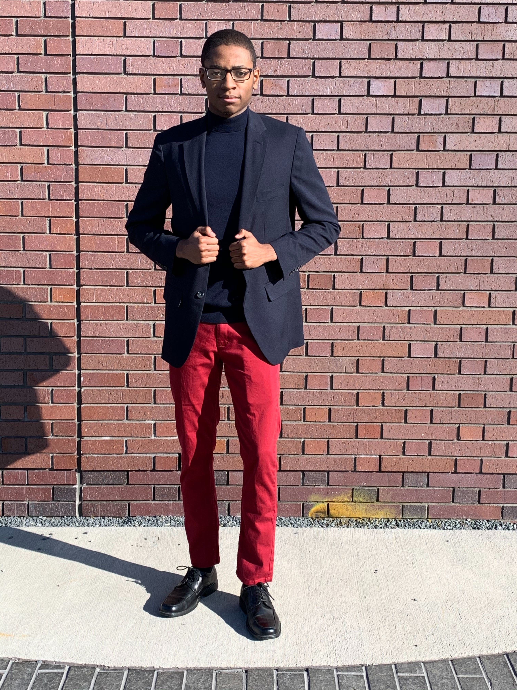

About Me
Welcome to my portfolio website! I am Malcolm and I am from Winston-Salem, NC. Currently I am studying computer science at North Carolina Agricultural and Technical State Universty. My journey in computer science began when I was younger. Growing up, I was an avid gamer. I loved playing videogames with my brothers and my friends. When I was 10 years old, my dad gave me a book on videogame development. At that time it never crossed my mine that I could be a person to create the awesome games that I was playing. I was hooked and from then on I would dive into the exciting world of programming and computer science. Although videogame development was my initial spark into computer science I have grown to learn more about the field. I have learn about different languages and technologies. I have learned about web development and mobile development. One of the greatest things I love about computer science is the broadness of the field and the field that they enjoy.
As I mentioned earlier, I am a computer science student at NC A&T. Along with my passion in computer science I am also passionate about the environmentand I am a proponent of sustainbility. I aspire to use my skills and talents in computer science to solve some of the greatest challenges concerning the environment. I believe technology and computer science are a big part of the overall solutions to solving issues related to the environment.
Outside of my academics I enjoy going for walks, being outside, reading, and cooking. My favorite color is green. My favorite foods are philly cheesesteak subs and sweet potato fries. My favorite movie franchise is Star Wars. Some of the genres of music I listen to often are R&B, Lo-Fi, Hip-Hop, and Classical. I also enjoy hanging out with my friends and being with my family. My friends and I are always talking about series, movies, or anime we are watching. If not talking about entertainment we are discussing anything thats on our mind or going on in the world.
Projects
-
Pique Recipes
REU - University of North Carolina at Charlotte
Web app that provides recipe recommendations based off of ingredient preferences.
Tech Stack: HTML, CSS, JavaScript, Django Web Framework
Learn More -
Pomoro
Personal Project
Online timer for using the pomodoro technique. It focuses on simplicity and usability.
Tech Stack: HTML, CSS, JavaScript, Vue.js
Learn More -
BBConnection
Hackathon - HackNCAT 2018
Web platform that connects small and medium black-owned businesses with opportunities.
Tech Stack: HTML, CSS, JavaScript
-
Rolisto
Personal Project
Web app to create and manage task lists and to-do lists.
Tech Stack: HTML, CSS, JavaScript, Angular, Firebase Firestore
-
Roobeks Timer
Personal Project
Easy to use timer and tool for Rubik's Cube solves.
Tech Stack: HTML, CSS, JavaScript
Learn More